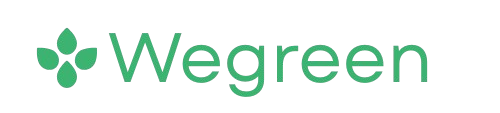
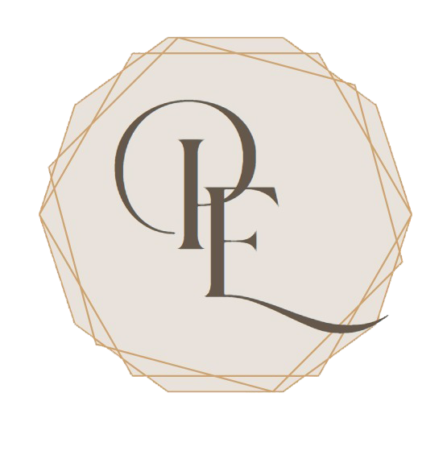
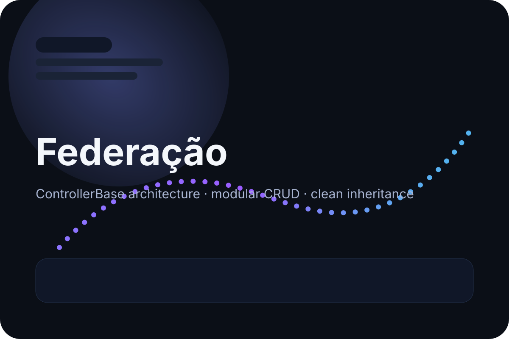
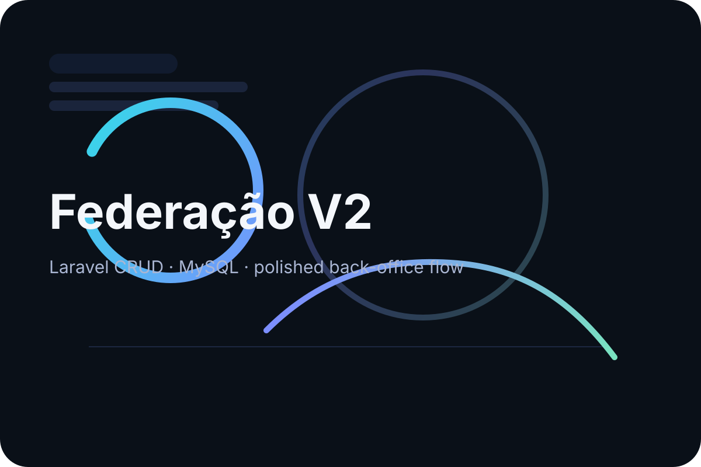
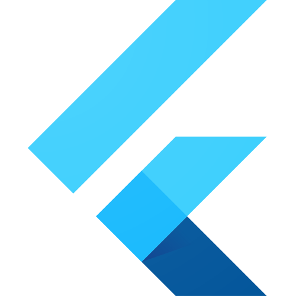
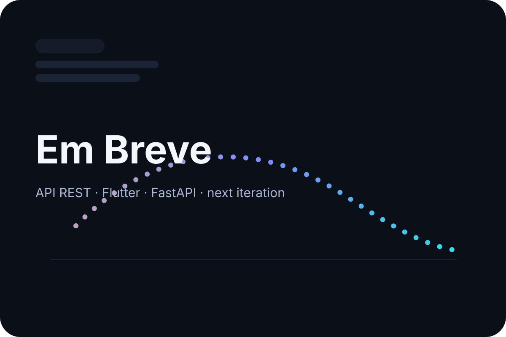

Design systems
Estrutura visual consistente, espaçamento controlado e componentes reutilizáveis.
Developer Portfolio / Premium UI / Vanilla HTML, CSS e JS
Sou Manuel Silvestre. Desenvolvo projetos web com foco em estrutura, clareza visual e execução profissional. Trabalho com backend, interfaces responsivas e soluções orientadas a produto, procurando sempre equilíbrio entre engenharia e estética.

Laravel / PHP / MySQL / JavaScript
Interfaces, sistemas web, APIs e produtos digitais.
Sobre mim
Sou técnico de Tecnologias de Informação e Programação, com experiência em desenvolvimento web e foco forte no backend. Gosto de criar soluções bem estruturadas, onde a lógica, a organização do código e a experiência visual trabalham em conjunto.
Ao longo da minha formação e dos meus projetos pessoais, desenvolvi capacidade de análise, resolução de problemas e disciplina de implementação. O objetivo é sempre o mesmo: entregar software claro, elegante e útil.
Interfaces com hierarquia visual forte e foco em usabilidade.
Backend organizado, escalável e orientado a manutenção.
Movimento e microinterações usadas com intenção, não por excesso.
Estrutura visual consistente, espaçamento controlado e componentes reutilizáveis.
Otimização de carga, animações leves e decisões pensadas para mobile.
Planeamento, arquitetura e disciplina de execução como base do produto final.
Skills
Projetos
Ao entrar nesta zona, a composição reage ao scroll com uma cena Three.js para dar mais presença visual aos projetos em destaque.

Plataforma e-commerce completa com três perfis de utilizador: vendedor, cliente e administrador.

Plataforma de festas para reservas de clientes e gestão operacional por administradores.

Projeto com ControllerBase para normalizar controladores, centralizar CRUD e reutilizar código.

CRUD em Laravel com MySQL, com base sólida para evolução de back-office e gestão de dados.

Aplicação mobile cross-platform integrada com uma REST API robusta e foco em estrutura funcional.

Nova iteração a caminho, com API REST, Flutter e FastAPI para expandir o ecossistema de produtos.
Experiência
Conclusão do ensino secundário em Programação e Gestão de Sistemas Informáticos.
Estágio numa empresa focada em realidade aumentada, com contacto direto com ambiente de produto e execução real.
Estágio numa empresa de design gráfico, reforçando sensibilidade visual e trabalho com aplicações Adobe.
Foco em evoluir como developer full-stack com atenção à engenharia de software, UI moderna e qualidade de entrega.
Contacto
Trabalho melhor em projetos onde backend, frontend e detalhe visual precisam de andar alinhados desde o início.
Estou disponível para oportunidades, colaborações e projetos que valorizem clareza técnica, estrutura sólida e uma experiência final bem desenhada.